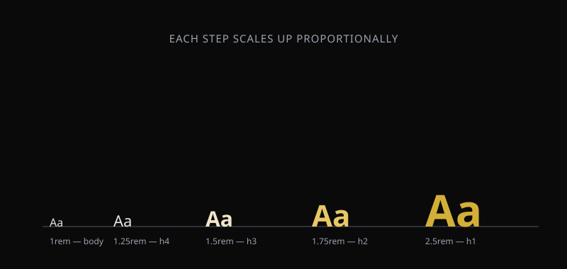

Designing with Text
Typography is one of the fastest ways to improve how a webpage looks and reads. Small choices in font, size, and spacing change how easy content is to scan and understand.
In this module, students move beyond default browser text styling and learn to control font family, size, weight, line height, and color with intention.
What you will learn
Apply font-family, font-size, and font-weight.
Control line-height and letter-spacing for readability.
Use relative units (rem, em, %) instead of fixed pixels.
Style text and background color with CSS.
Build a simple visual hierarchy using type scale.
Use AI to compare font pairing options and explain trade-offs.
Building a Visual Hierarchy
A type scale is a set of font sizes that increase proportionally, giving headings and body text a consistent, readable relationship to each other.
h1 { font-size: 2.5rem; }
h2 { font-size: 1.75rem; }
p { font-size: 1rem; line-height: 1.6; }
Relative Units and Color
Fixed pixel values do not scale well when users change their browser's text size settings. Relative units keep typography flexible and accessible.
.card-title {
font-size: 1.25rem;
color: #1a1a1a;
background-color: #f5f5f5;
}Use AI to Compare Font Choices
AI can quickly generate several font pairing options, but a good pairing still has to be judged by eye, in the browser.
Compare font pairings
Try this prompt
Suggest three font pairings for a personal blog: one heading font and one body font each. Explain in one sentence why each pairing works. Do not write any CSS.
Verify
- Apply each pairing to the same sample page.
- Check readability at both small and large sizes.
- Pick the pairing you can justify, not just the one AI listed first.
Restyle a Content Page
Take an existing HTML page from an earlier module and apply a complete typography system to it.
Use AI to check your hierarchy
After restyling your page, ask AI to evaluate the visual hierarchy — not to rewrite your CSS.
Ask AI to critique, not rewrite
I applied a typography system to my HTML page. Here is my CSS. Tell me if the heading sizes create a clear hierarchy and whether my line-height choices are readable. Do not rewrite the CSS for me.
Your goal
Be able to explain, in your own words, why you chose each font size and color — not just repeat what the AI said.
Module Knowledge Check
Test your understanding of the typography concepts introduced in this module.
Why is rem generally preferred over fixed pixel values for font size?
The final quiz will be implemented as a Canvas Quiz rather than as part of this informational page.
Think About Your Process
Can I explain the difference between rem, em, and px?
Can I build a type scale with a clear visual hierarchy?
Can I justify a font pairing in my own words?
Can I evaluate an AI suggestion instead of just accepting it?